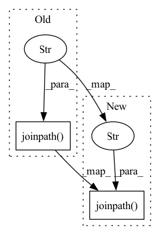

Pattern ID :28783
Before Change
)
hf_datadict[subset_name].to_csv(
output_path.joinpath(f"{subset_name}.csv" ) , header=False, index=False
)
column_name_map = {After Change
def _preprocess_subset(
self, hf_datadict: datasets.DatasetDict, subset_name: str, output_path: Path
) -> CSVClassificationDataset:
csv_path = output_path.joinpath(f"{subset_name}.csv" )
self._save_to_csv(hf_datadict, subset_name, csv_path)
column_name_map = {
hf_datadict[subset_name].column_names.index(self.input_column_name): "text",
hf_datadict[subset_name].column_names.index(self.target_column_name): "label",In pattern: SUPERPATTERN
Frequency: 8
Non-data size: 2
Instances Fragment ID: 84676716
Project Name: clarin-pl/embeddings
Commit Name: 68a1c0f3368b324dcefd27033dd0a33ba2f77eba
Time: 2021-07-15
Author: 34009816+albert097@users.noreply.github.com
File Name: embeddings/transformation/flair_transformation/classification_corpus_transformation.py
M Class Name: ClassificationCorpusTransformation
N Class Name: ClassificationCorpusTransformation
M Method Name: _preprocess_subset(4)
N Method Name: _preprocess_subset(4)
M Parent Class: CorpusTransformation
N Parent Class: CorpusTransformation
M File Name: embeddings/transformation/flair_transformation/classification_corpus_transformation.py
N File Name: embeddings/transformation/flair_transformation/classification_corpus_transformation.py
M Start Line: 15
M End Line: 29
N Start Line: 15
N End Line: 21
Before Change
load_path = (
self.load_path
if self.trial.load_backbone_weights()
else self.load_path.joinpath("checkpoint" )
)
logging.info(f"Loading model from {load_path}")
self.session_init = tp.get_model_loader(str(load_path))
After Change
if backbone_weights_path:
self.load_path = pathlib.Path(backbone_weights_path)
else:
self.load_path = self.load_path.joinpath("checkpoint" )
if self.load_path is None or not self.is_chief:
logging.info(f"Not loading model")
self.session_init = None Fragment ID: 84676718
Project Name: determined-ai/determined
Commit Name: a069dfaa338be581f03d79575cbe5cf2d42d9046
Time: 2020-04-27
Author: aaron@determined.ai
File Name: harness/determined/tensorpack/_tensorpack_trial.py
M Class Name: TensorpackTrialController
N Class Name: TensorpackTrialController
M Method Name: _load(1)
N Method Name: _load(1)
M Parent Class: det.LoopTrialController
N Parent Class: det.LoopTrialController
M File Name: harness/determined/tensorpack/_tensorpack_trial.py
N File Name: harness/determined/tensorpack/_tensorpack_trial.py
M Start Line: 468
M End Line: 480
N Start Line: 468
N End Line: 477
Before Change
logging.info(f"Not loading model")
self.session_init = None
else:
load_path = self.load_path.joinpath("checkpoint" )
logging.info(f"Loading model from {load_path}")
self.session_init = tp.get_model_loader(str(load_path))
def run(self) -> None:After Change
load_path = (
self.load_path
if self.trial.load_backbone_weights()
else self.load_path.joinpath("checkpoint" )
)
logging.info(f"Loading model from {load_path}")
self.session_init = tp.get_model_loader(str(load_path))
Fragment ID: 84676713
Project Name: determined-ai/determined
Commit Name: b7b05c21a504a016927d3433bd237d84aed4d156
Time: 2020-04-27
Author: aaron@determined.ai
File Name: harness/determined/tensorpack/_tensorpack_trial.py
M Class Name: TensorpackTrialController
N Class Name: TensorpackTrialController
M Method Name: _load(1)
N Method Name: _load(1)
M Parent Class: det.LoopTrialController
N Parent Class: det.LoopTrialController
M File Name: harness/determined/tensorpack/_tensorpack_trial.py
N File Name: harness/determined/tensorpack/_tensorpack_trial.py
M Start Line: 474
M End Line: 474
N Start Line: 468
N End Line: 478
Before Change
def load_model(ckpt_dir: pathlib.Path, **kwargs: Any) -> torch.nn.Module:
code_path = ckpt_dir.joinpath("code" )
// We used MLflow"s MLmodel checkpoint format in the past. This format
// nested the checkpoint in data/. Currently, we have the checkpoint at the
// top level of the checkpoint directory.After Change
def load_model(ckpt_dir: pathlib.Path, metadata: Dict[str, Any], **kwargs: Any) -> torch.nn.Module:
trial = _local_trial_from_context(
ckpt_dir.joinpath("code" ) ,
config=metadata["experiment_config"],
hparams=metadata["hparams"],
) Fragment ID: 84676715
Project Name: determined-ai/determined
Commit Name: 47ec6cc32234d8e797d9ae3c23d70bfb6d3a64a9
Time: 2020-05-18
Author: sidney@determined.ai
File Name: common/determined_common/experimental/checkpoint/_torch.py
M Class Name: AnonimousClass
N Class Name: AnonimousClass
M Method Name: load_model(2)
N Method Name: load_model(1)
M Parent Class:
N Parent Class:
M File Name: common/determined_common/experimental/checkpoint/_torch.py
N File Name: common/determined_common/experimental/checkpoint/_torch.py
M Start Line: 10
M End Line: 28
N Start Line: 10
N End Line: 22
Before Change
tokenizer_model_folder_path = wd_path.joinpath(self.tokenizer_folder_name).joinpath("1")
tokenizer.save_pretrained(str(tokenizer_model_folder_path.absolute()))
tokenizer_model_path = Path(__file__).absolute().parent.parent.joinpath("utils").joinpath("python_tokenizer.py")
shutil.copy(str(tokenizer_model_path), str(Path(tokenizer_model_folder_path).joinpath("model.py" ) ))
model_folder_path = wd_path.joinpath(self.model_folder_name).joinpath("1")
shutil.copy(model_path, os.path.join(model_folder_path, "model.bin"))
After Change
tokenizer_model_folder_path = wd_path.joinpath(self.tokenizer_folder_name).joinpath("1")
tokenizer.save_pretrained(str(tokenizer_model_folder_path.absolute()))
source_code: str = inspect.getsource(python_tokenizer)
Path(tokenizer_model_folder_path).joinpath("model.py" ) .write_text(source_code)
model_folder_path = wd_path.joinpath(self.model_folder_name).joinpath("1")
shutil.copy(model_path, os.path.join(model_folder_path, "model.bin"))
Fragment ID: 84676709
Project Name: els-rd/triton_transformers
Commit Name: c87a39e006f2e37dcd1831c173be3fa9d59e77b5
Time: 2022-01-10
Author: pommedeterresautee@users.noreply.github.com
File Name: src/transformer_deploy/templates/triton.py
M Class Name: Configuration
N Class Name: Configuration
M Method Name: create_folders(3)
N Method Name: create_folders(3)
M Parent Class:
N Parent Class:
M File Name: src/transformer_deploy/templates/triton.py
N File Name: src/transformer_deploy/templates/triton.py
M Start Line: 275
M End Line: 276
N Start Line: 278
N End Line: 279
Before Change
def load_model(
ckpt_dir: pathlib.Path, metadata: Dict[str, Any], **kwargs: Any
) -> Union[PyTorchTrial, torch.nn.Module]:
checkpoint = torch.load(ckpt_dir.joinpath("state_dict.pth" ) , **kwargs) // type: ignore
trial_cls, trial_context = experimental._load_trial_on_local(
ckpt_dir.joinpath("code"),After Change
def load_model(
ckpt_dir: pathlib.Path, metadata: Dict[str, Any], **kwargs: Any
) -> Union[PyTorchTrial, torch.nn.Module]:
checkpoint = torch.load(str(ckpt_dir.joinpath("state_dict.pth" ) ), **kwargs) // type: ignore
trial_cls, trial_context = experimental._load_trial_on_local(
ckpt_dir.joinpath("code"), Fragment ID: 84676711
Project Name: determined-ai/determined
Commit Name: 64550ef944e1fd78c44a5dc1717d997071a388a6
Time: 2020-12-04
Author: mackrory@determined.ai
File Name: common/determined_common/experimental/checkpoint/_torch.py
M Class Name: AnonimousClass
N Class Name: AnonimousClass
M Method Name: load_model(2)
N Method Name: load_model(2)
M Parent Class:
N Parent Class:
M File Name: common/determined_common/experimental/checkpoint/_torch.py
N File Name: common/determined_common/experimental/checkpoint/_torch.py
M Start Line: 13
M End Line: 13
N Start Line: 13
N End Line: 13
Before Change
],
config,
)
test_setup_path = tests_dir.joinpath( "bin", "createUserAndExperiments.py" )
run(["python", str(test_setup_path)], config)
def _cypress_container_name(config):After Change
run_ignore_failure(["rm", "-r", str(tests_dir.joinpath(RESULTS_DIR_NAME))], config)
// TODO add a check for cluster condition
run(
["python", str(tests_dir.joinpath( "bin", "createUserAndExperiments.py" ) )],
config,
)
Fragment ID: 84676720
Project Name: determined-ai/determined
Commit Name: 3379ecab474dbf871dddba95034b959b58068956
Time: 2020-06-01
Author: hamidzr@users.noreply.github.com
File Name: webui/tests/bin/e2e-tests.py
M Class Name: AnonimousClass
N Class Name: AnonimousClass
M Method Name: pre_e2e_tests(1)
N Method Name: pre_e2e_tests(1)
M Parent Class:
N Parent Class:
M File Name: webui/tests/bin/e2e-tests.py
N File Name: webui/tests/bin/e2e-tests.py
M Start Line: 43
M End Line: 58
N Start Line: 75
N End Line: 75